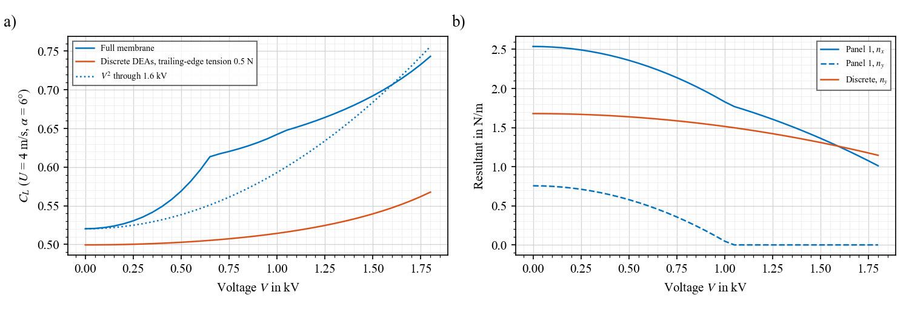
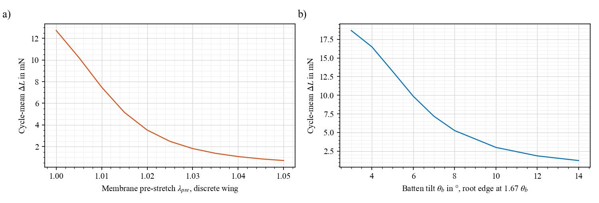
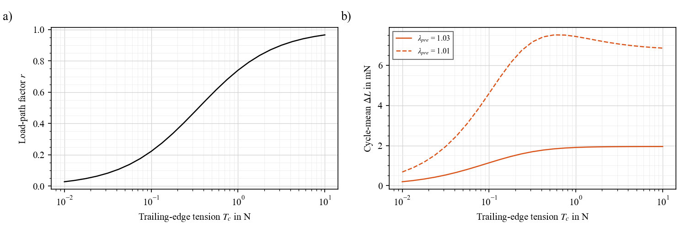
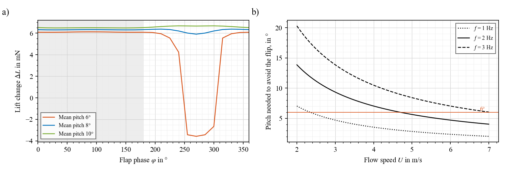
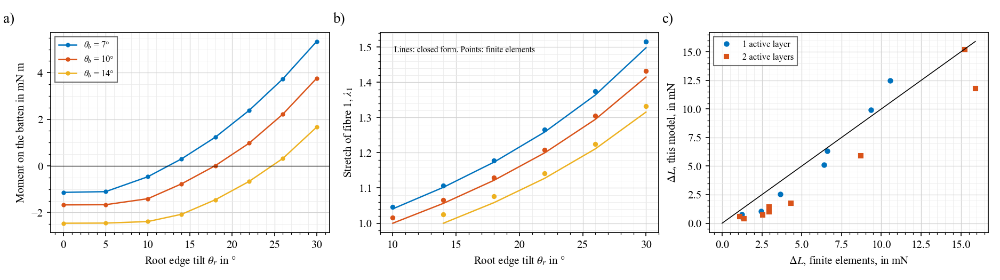
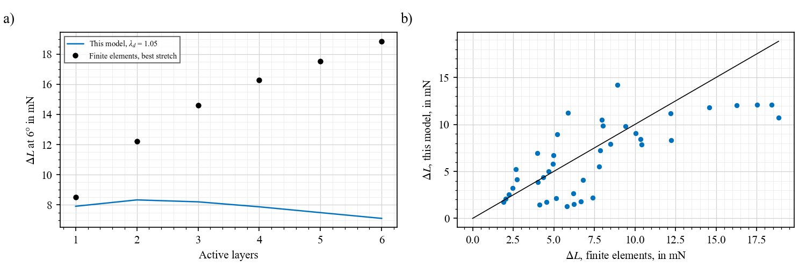

Active membrane wings / Model
Lift changes because voltage lowers the tension in the wing, so the wing bulges more under its air load. That is the whole idea. The steps below build it up term by term, with equations on the left and their meaning and how to measure each term on the right.
A membrane under pressure is like a drum skin: the lower its tension, the further it bulges. On a wing there are three forces on that bulge:
Each wing panel is treated as a rectangle with one bulge shape. Balancing those three gives one equation for one unknown, the bulge height $A$. Both wings use it. They differ only in where their tension comes from (step 3). The full membrane is the tilted cut, brought to vertical.
Notation as in Konstantinidi et al., Smart Mater. Struct. 32 (2023) 125011 and Compos. Sci. Technol. 258 (2024) 110849. The result has the same form as the fibre buckling model: a threshold, then square-root growth.
What each part of the modelling is built on. All of it assumes attached flow, either steady or quasi-steady.
| Physics | Approach | Used for |
|---|---|---|
| Silicone | Incompressible Yeoh hyperelasticity, fitted on bench data | All sheet and fibre models |
| Composite membrane | Additive strain energy: isotropic matrix plus fibre families ($I_1$, $I_4$) | Biomimetic membrane design |
| Electromechanics | Dielectric elastomer free energy; Maxwell stress $P=\eta\,n\,\varepsilon_0\varepsilon_r V^2/H$ | All active sheets and fibres |
| Membrane structure | Nonlinear finite elements: constant-strain triangles, total Lagrangian | Full wing (page) |
| Wrinkling | Tension-field relaxation | Full wing |
| Rods and battens | 3D Euler–Bernoulli frame; 1D tension-only bars for rolled fibres | Full wing |
| Solver | Dynamic relaxation with kinetic damping | Full wing |
| Aerodynamics | Steady vortex-ring lattice; thin-airfoil theory (Glauert) for sections | Full wing; section model |
| Flapping | Quasi-steady strips: local speed and angle along the stroke | Stroke results |
| Reduced model | Rayleigh–Ritz, one bulge per panel: one cubic, with static divergence | This page, sweeps, wing comparison |
| Load path | Springs in series; geometric stiffness of a tensioned edge | $r$ for discrete fibres |
| Measured flapping lift | Within-cycle contrast against voltage, with rotated-phase placebos | Re-analysis |
1. Starting point: a membrane under pressure
Tension times curvature balances pressure. This is the only physics assumed for the sheet's shape.
| Term | What it is | How to get it |
|---|---|---|
| $w(x,y)$ | Out-of-plane deflection | Stereo video or laser line |
| $x,\ y$ | Along the span, along the chord | – |
| $n_x,\ n_y$ | Tension per unit width, N/m, along span and chord | Step 3. Measure by resonance (below) |
| $p$ | Pressure difference across the skin, Pa | Step 5: from the lift |
2. One bulge shape
Instead of solving for the whole surface, assume one smooth bulge. The only unknown left is its height.
| Term | What it is | How to get it |
|---|---|---|
| $A$ | Bulge height, m. The answer | Same measurement as $w$ |
| $a$ | Panel span between supports, m | From the wing: 56 mm inboard, 61 mm outboard |
| $b$ | Panel chord, m | From the wing: 41 mm, and an effective 16 mm for the outboard triangle, set from the finite elements |
3a. Tension from stretch
A stretched incompressible sheet, at small strain. Stretch sets the tension before any voltage. The discrete wing uses this form directly.
| Term | What it is | How to get it |
|---|---|---|
| $e_x,\ e_y$ | Strain, $e=\lambda-1$. Along and across the strings | Printed markers on the sheet |
| $\lambda_d,\ \lambda_n$ | Stretch along and across the fibre | $\lambda_d$: from the rotation, step 3b. $\lambda_n$: 1.05, set when bonding |
| $G=2C_1$ | Shear modulus, Pa | $C_1$ = 42.8 kPa, fit to the bench bundle |
| $H$ | Dielectric thickness per film, m | 35 µm. Measure by cross-section |
| $H_p$ | Passive thickness, m | The cover layers. $H+H_p=(N+1)H$ |
| $N$ | Number of active layers | Your stack: 2 |
3b. Where the stretch comes from: tilt, then rotate
The full sheet is cut unstretched along the fibre, with the root edge and batten tilted. Bringing both to vertical about the LE lengthens the fibres, so no stretching rig is needed. Panel 1 also shears, which leaves it taut in one direction only, $N_1$ at angle $\phi$. Geometry alone sets $\lambda_1$ and $\lambda_2$. The largest stretch $\lambda$ of panel 1 follows from $\lambda_1$ and the mean shear $\tfrac12(\tan\theta_b+\tan\theta_r)$; in panel 2, $\lambda=\lambda_2$.
| Term | What it is | How to get it |
|---|---|---|
| $\theta_b,\ \theta_r$ | Tilt of the batten and root edge as cut | From the mask: 4.5°, 7.5° |
| $\theta_r\approx1.67\,\theta_b$ | Balance: no moment on the batten about its hinge, so one line brings both to vertical | Finite elements, no flow, 20 mm roll (1.77 with 13 mm). Check: does the batten arrive at vertical? |
| $L_1$ | Length of fibre 1, vertical | 56.2 mm, root edge to batten |
| $L_2,\ L_{2,0}$ | Fibre 2, vertical; as cut | 61.2 mm; 58.4 mm |
| $N_1$ | Tension along the taut direction, N/m | Computed; $\lambda_1,\lambda_2$ by markers |
| $\phi$ | Angle of the taut direction from the span | Panel 1: computed. Panel 2: 38°, along its fibre |
| $\beta$ | Mean tension over the uniform value | 0.79, 1.0. Set from the finite elements |
| $e_n,\ \beta_e$ | Chord strain, $\lambda_n-1$; its share reaching the panel | 0.04, set when bonding; 0.5, 0.2 |
3c. Voltage lowers the tension: full sheet
The Maxwell stress of your equation of state, as a resultant. If $n_y$ reaches 0 the sheet wrinkles and $n_x$ then only falls by $P/2$, because the sheet can spread sideways.
| Term | What it is | How to get it |
|---|---|---|
| $P$ | Tension drop from voltage, N/m | Computed: 1.81 N/m at 1.6 kV. Measure by resonance |
| $\eta$ | Efficiency: measured / ideal | Estimated 0.5. Measure on a flat strip |
| $\chi$ | Active fraction, $H/(H+H_p)$; $N/(N+1)$ here | From the stack |
| $\varepsilon_0\varepsilon_r$ | Permittivity; $\varepsilon_r$ = 2.8 | Assumed; capacitance gives it |
| $V$ | Voltage | 1.6 kV, from a calibrated monitor |
3d. Voltage lowers the tension: discrete DEAs
Actuators in parallel with a passive membrane. Only the part $r$ of their force reaches the wing, because they pull against whatever holds their ends.
| Term | What it is | How to get it |
|---|---|---|
| $n_{y,m}$ | Tension of the passive membrane | Bench fit plus pre-stretch |
| $F_D,\ \Delta F$ | DEA force at its pre-stretch; its drop at 1.6 kV | Bench: 14.1 mN; 8.6 mN |
| $s$ | DEA spacing | 12 mm |
| $r$ | Load-path factor, 0 to 1 | Computed. 0.59 at $T_c$ = 0.5 N |
| $k_d$ | DEA stiffness | Bench: 3.1 N/m |
| $T_c,\ L_s$ | Trailing-edge tension; its span | Load cell in the line; 104 mm |
| Free edge | $T_c=0$, so $r=0$ | Statics, Eq. S13: nothing aft of a cut to react the chord force |
4. Tension becomes stiffness
Putting the shape of step 2 into step 1. Short spans are stiff, which is why tension counts most in the shorter direction.
| Term | What it is | How to get it |
|---|---|---|
| $T$ | Stiffness of the bulge from tension, N/m³ | Computed; falls with voltage |
| $X,\ Y$ | Curvature of the shape along span and chord, 1/m² | Computed from $a$, $b$ |
5. The air load, with its feedback
Lift gives the pressure. Lift depends on the wing's angle and on its camber, and camber is the bulge. So $A$ appears on both sides.
| Term | What it is | How to get it |
|---|---|---|
| $C_L$ | Lift coefficient of the panel | Force balance |
| $q$ | Dynamic pressure, Pa | 9.8 Pa at 4 m/s |
| $\rho,\ U$ | Air density; flow speed | 1.225 kg/m³; tunnel |
| $a_L$ | Lift slope of the flat wing, per radian | 4.39 from a vortex lattice, with the root edge vertical; measure on a rigid wing |
| $\alpha$ | Angle of attack, radians | Set; when flapping, it varies (below) |
| $c$ | Extra incidence per unit $A/b$ for this shape | 1.134, thin-airfoil theory |
| $k$ | Corrects $c$ for loading that peaks at the LE | 1.476: recovers Eq. S5 exactly. Not fitted |
6. Balance: the one equation
The three forces on the bulge. Left: tension and softening, then stretching. Right: the air load on a flat wing. Solving this cubic gives $A$.
| Term | What it is | How to get it |
|---|---|---|
| $\Phi$ | Mean of the shape, $4/\pi^2$: how much of a uniform pressure acts on this bulge | Fixed by the shape |
| $q\Phi a_L\alpha$ | Air load on the flat wing, per unit area of bulge | Computed; see the worked example |
| $D=\dfrac{q\Phi a_Lkc}{b}$ | Aerodynamic softening: bulge raises load | Computed. Grows with $U^2$ |
| $K=\gamma\,2G(H+H_p)(X^2+XY+Y^2)$ | Stiffening: the bulge stretches the sheet | Computed |
| $\gamma$ | Corrects for one shape over-counting stretching | 0.7. The one fitted number |
7. Two regimes
While tension wins, the bulge is proportional to the load. If voltage takes $T$ below $D$ the flat wing is unstable: static divergence, like $F>F_c$ in fibre buckling. Then stretching sets the bulge, whatever the load, and $A$ picks the side the air pushes. This is why the full membrane's lift change depends little on $\alpha$.
| Term | What it is | How to get it |
|---|---|---|
| $T=D$ | Divergence: the threshold | Equals $C_{T,crit}=1.727$ in 2D |
| $A=\sqrt{(D-T)/K}$ | Compare $\frac{2}{k}\sqrt{(F-F_c)/(h_fE_f)}$ in your buckling model | Same form |
8. Lift change, and the active fibre
Add up the panels. An active fibre must keep some force at full voltage, or the edge is no longer held. Below about 10 mN at voltage the finite elements almost never settle. Stretch and the strip's whole width give the force, and only the active band takes it away, so what matters is $w_e/w_s$, whatever the thickness. Why, with the numbers.
| Term | What it is | How to get it |
|---|---|---|
| $\phi_i,\ S$ | Area share of each panel; wing area | 0.70, 0.30; 32.1 cm² |
| $A_0$ | Fibre section, $w_s(H+H_p)$ | Mask and stack |
| $w_s,\ w_e$ | Strip width; active band next to the sheet | 20 mm; 5 mm |
| $\eta_f$ | Efficiency of the roll | 0.4, bench, isometric. Measure on the real band |
9. What the fibre does to lift: the edge rises
The trailing edge is a string pulled by $F$, lifted by the air load on the strip $\ell$ next to it. Rising, it lowers the angle of attack. This is separate from step 6: it is a check and a way to reason, and it is not added to the lift above.
| Term | What it is | How to get it |
|---|---|---|
| $\bar z_{TE}$ | Mean height of the edge | Video of the edge in flow. Model: 0.2 mm at 0 V, 1.3 mm at 1.6 kV |
| $\ell$ | Strip of sheet that loads the edge and shares its tension | About 10 mm, set from the finite elements: correlation 0.985 on 206 states |
| $-0.14$ | Lift lost per mm of rise | Finite elements. Flat-wing estimate $a_L/c$ = 0.11 |
Every number below can be checked by hand from the steps above. Two active layers, so $H+H_p$ = 105 µm. $q$ = 9.8 Pa. Tilted cut, batten 4.5°, root edge 7.5°, so $\lambda_1$ = 1.040, $\lambda_2$ = 1.043. Air load on the right of step 6: $q\Phi a_L\alpha$ = 1.83.
| Quantity | Panel 1, 0 V | Panel 2, 0 V | Panel 1, 1.6 kV | Panel 2, 1.6 kV |
|---|---|---|---|---|
| Span tension $n_x$, N/m | 1.15 | 0.70 | 0.51 | 0.14 |
| Chord tension $n_y$, N/m | 1.40 | 0.79 | 0.22 | 0.08 |
| Stiffness $T$ | 2951 | 8049 | 731 | 895 |
| Softening $D$ | 712 | 1824 | 712 | 1824 |
| State | Stable | Stable | Just stable | Past divergence: $T<D$ |
| Bulge $A$, mm | 0.80 | 0.29 | 3.29 | 1.35 |
| $C_L$ of the panel | 0.60 | 0.59 | 1.05 | 1.08 |
| Predicted resonance, no flow, Hz | 51 | 84 | 25 | 28 |
Wing $C_L$ = 0.70 × panel 1 + 0.30 × panel 2: 0.60 at 0 V, 1.06 at 1.6 kV. With $qS$ = 32.6 mN that is a lift change of 14.9 mN. The finite elements at the same point give $C_L$ of 0.59 and 1.05, and 14.5 mN.
A cheap direct test. Without flow, the resonance of a panel is $f=\tfrac12\sqrt{(n_x/a^2+n_y/b^2)/(\rho_m(H+H_p))}$ with $\rho_m$ about 1100 kg/m³. Tap or drive it with a speaker and read $f$ with a laser or camera. Panel 1 is the one to trust, since panel 2's chord is an effective value. The measured fall with voltage gives $P$, and so $\eta$, on the real wing, with no tunnel needed.
Graphs of the comparison itself, over the stroke, with speed and with $\eta$, are on the main page. These show what controls it.



Use it for trends at 3–5 m/s, not for absolute numbers. On the design it gives 14.9 mN where the finite elements give 14.5 mN at 4 m/s, partly by luck: across 102 cases of the design study its correlation is only 0.30 and its typical error 4.7 mN, because it has no fibre term. So the finite elements chose the design. On the discrete wing, 1.95 against 1.83 mN (section model). The situations below are different.
| Where | Why it fails | What to do |
|---|---|---|
| Mid-upstroke, 240–300°, at 2 Hz | The stroke takes the outer panel's angle through zero. Past divergence, the panel can sit on either side, so the state depends on its history. This model flips it at voltage; the finite elements flip it at 0 V. Neither includes the dynamics of a flip. | Avoid it: keep the angle positive, $\alpha>\arctan(\Phi_0\,2\pi f\,r/U)$. At 4 m/s and 2 Hz that is 7°: at 8° pitch the flip is gone (below). Or fly at 1.5 Hz or less. To model it: add the panel's dynamics, and film it. |
| Above about 5 m/s | High air load, so the bulge is large and the uniform-load, one-shape picture is stretched. Over-predicts at 6 m/s: 1.7× on the discrete wing, about 2× on the tilted full membrane. Attached flow also becomes doubtful. | Refit $k$ and $\gamma$ to tunnel data. If it stays off, add a second chord shape. |
| Low speed, or high $\eta$, full membrane | The stiffness $K$ and the effective panel were set at 4 m/s and $\eta$ near 0.5. On the design: 5.7 mN against 7.6 mN at 3 m/s, and 18.7 mN against 20.7 mN at $\eta$ = 0.7. | Refit $\beta$ and $\gamma$ once $\eta$ is measured. |
| Wrinkled panel 1 | The finite elements leave panel 1 46 % wrinkled at 0 V, with 7 % on panel 2. One bulge cannot show this, and neither model shows what the wrinkles do to the flow. | Photograph the sheet at 0 V. If it is too rough, raise $\lambda_n$ to 1.06: 35 % wrinkled, 13.9 mN. |
| More active layers, or panel shape | One shape cannot represent a wrinkled sheet: the finite elements rise 8.4, 14.5, 16.9, 18.0 mN from 1 to 4 layers on the design, this model stays nearly flat. Batten position is not captured either. | Use the finite-element design study for these. Test one against two layers. |
| Very low tension, $\lambda_{pre}$ near 1.00; active fibre near slack | Fibre and edge are assumed to hold the trailing edge. As their force falls, they stop doing so, and a slack sheet can flutter, which no steady model shows. Finite-element runs almost never settle with less than about 10 mN in the fibre at voltage: 1 of 60. Above 20 mN they all do. | Keep $w_e/w_s$ small: 0.25 on the design leaves 14–15 mN. Film the edge on the first build. |


